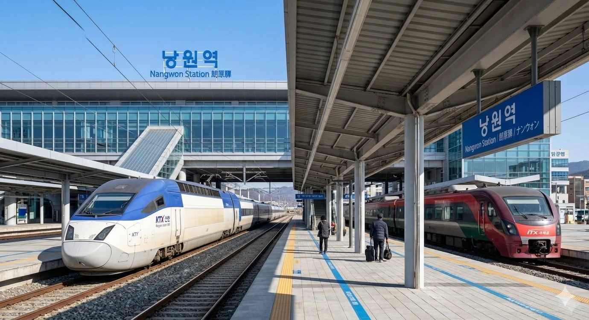

낭원군의 중심이자 KTX가 정차하는 핵심 거점역. 덕빈북도낭원군낭원읍 광전리에 위치한 덕빈선의 철도역이다.
낭원군의 군청 소재지인 낭원읍의 중심역으로, 낭원군의 시(市) 승격을 견인하는 교통의 심장부이다. 인구 15만 명에 육박하는 낭원군의 위상에 걸맞게 ITX-새마을, 무궁화호 등 모든 일반열차가 필수 정차하며, 서울 및 부산 방면으로 향하는 KTX 고속열차도 일부 선택 정차하여 지역 주민들의 장거리 이동 편의를 돕고 있다.
2. 역 정보
1929년 5월 30일 덕빈선 개통과 함께 영업을 개시하였다. 개업 초기에는 전형적인 농촌 역이었으나, 낭원읍이 군의 행정 및 상업 중심으로 성장하면서 이용객이 꾸준히 증가하였다.
2010년대 덕빈선 고속화 사업과 함께 구 역사를 철거하고 현재의 현대식 선상 역사를 완공하였다. 낭원군의 상징인 '맑고 밝은(朗)' 이미지를 투명 유리 소재를 활용하여 건축적으로 표현하였다. 역 내에는 낭원군 특산물 판매장과 관광 안내소가 위치해 있다.
3. 역 구조

낭원역 승강장 전경
2면 4선의 쌍섬식 승강장 구조를 갖추고 있다. KTX 정차에 대비하여 승강장 유효장이 길게 설계되었다. 안쪽의 2, 3번 선로는 주로 KTX 및 일반열차의 주행 및 정차에 사용되며, 바깥쪽 1, 4번 선로는 대피 및 화물 열차 운행 시 활용된다.
현재 국가 및 지자체 주도로 강력하게 추진 중인 덕빈권 최상위 광역교통망 HDTX-A(덕빈권 광역급행철도 A선)가 낭원역을 주요 정차역으로 경유할 예정이다.
HDTX-A 노선의 계획에 따르면, 고송교차로와 효빈역을 거쳐 효빈 도심을 뚫고 지나온 광역급행열차가 대심도 터널을 빠져나와 이곳 낭원역부터 기존 덕빈선 지상 선로를 공용하여 덕주 방면으로 운행하게 된다. 즉, 낭원역은 대심도 전용 구간과 기존선 공용 구간이 이어지는 매우 중요한 철도망의 결절점 역할을 수행하게 된다.
이 노선이 완공 및 개통될 경우, 낭원역에서 효빈광역시 핵심 도심(효빈역, HSCO, 고송교차로 등)까지의 편도 이동 시간이 단 10~15분 내외로 혁신적으로 단축된다. 기존에 무궁화호나 시외버스, 자차로 이동해야 했던 불편함을 생각하면 그야말로 교통 혁명 수준이다.
특히 낭원군의 오랜 염원이자 숙원 사업인 '낭원시 승격'에 가장 거대하고 강력한 기폭제가 될 것으로 현지에서는 뜨거운 기대를 모으고 있으며, HDTX-A 개통에 발맞춰 낭원역 주변 역세권 및 광장 시설 또한 급행철도 규모에 맞는 대대적인 환승 체계 개편과 재개발이 진행될 전망이다.
6. 기타
KTX 정차
덕빈선 KTX 운행 초기에는 정차역에 포함되지 않았으나, 낭원군의 인구 증가와 군민들의 지속적인 요구로 인해 일부 열차가 정차하게 되었다. 이는 낭원군의 위상이 높아졌음을 보여주는 사례다.
시 승격의 염원
역 광장에는 '낭원시 승격 기원' 조형물과 현수막이 상시 걸려 있어 지역 사회의 뜨거운 열망을 느낄 수 있다.